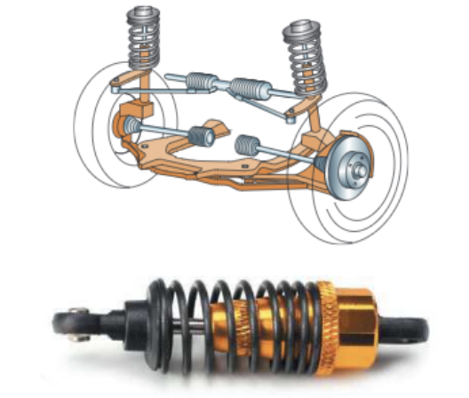
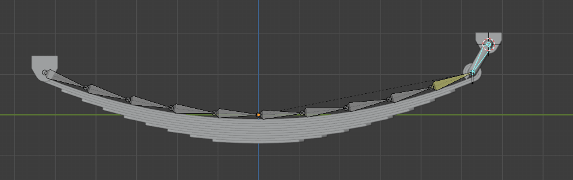

Sesión 8
Son los elementos de las máquinas que permiten almacenar energía mecánica de la propia máquina para ser liberada en un momento posterior. Estudiaremos en esta sección los muelles, las ballestas y los volantes de inercia.
Muelles
Son unos arrollamientos helicoidales de acero elástico que se retuercen y/o comprimen según el esfuerzo a soportar. Su misión es absorber energía en forma de vibraciones o cuando una fuerza actúa sobre ellos, para, a continuación, liberaría lentamente.

Una aplicación típica es como elemento de suspensión de vehículos.
Ballestas
Las ballestas están formadas por un conjunto de láminas de acero, unidas mediante unas abrazaderas que permiten el deslizamiento entre las hojas cuando éstas se deforman por el peso que soportan.
Se usan como elemento de suspensión de vehículos pesados, para absorber vibraciones.


Volante de inercia
Es un elemento totalmente pasivo, que únicamente aporta al sistema una inercia adicional, de modo que le permite almacenar energía cinética. Este volante continúa su movimiento por inercia cuando cesa el par motor que lo propulsa.
Consiste en una rueda o un disco, de fundición o de acero, que se monta en un eje o árbol, para garantizar un giro regular. Esta rueda o volante es capaz de evitar irregularidades en el giro. La inercia de este volante frena el giro del eje cuando éste tiende a acelerarse y le obliga a girar cuando tiende a detenerse.
La energía cinética que acumula un volante de inercia al girar con una velocidad angular ω es la siguiente:
\[E_{C}=\frac{1}{2}\cdot I\cdot \omega ^{2}\]
Donde:
- EC:energía cinética del volante, en julios (J)
- I: momento de inercia del volante, en kilogramos-metro cuadrado (kg·m2)
- ω: velocidad angular del volante, en radianes por segundo (rad/s)
Podemos ver que el momento de inercia del volante es un elemento determinante porque, a mayor I, mayor energía cinética es capaz de acumular el volante. Ese momento de inercia depende de la masa del volante y de su radio. En concreto su expresión es:
\[I=\frac{1}{2}\cdot m\cdot r ^{2}\]
Donde:
- I: momento de inercia del volante, en kilogramos-metro cuadrado (kg·m2)
- m:masa del volante de inercia, en kilogramos (kg)
- r:radio del volante de inercia, en metros (m)
Como un volante de inercia se utiliza para almacenar energía cinética, nos interesa que su momento de inercia sea elevado. Por eso, los volantes de inercia suelen ser pesados (mucha masa) y lo más grande que permita la maquina (mucho radio).
En esta imagen puedes ver un volante de inercia de un motor de combustión interna, junto con el cigüeñal del motor. Puedes observar que el radio del volante de inercia es bastante mayor que el del cigüeñal:

El exceso de energía (ΔW) que absorbe el volante de inercia se traduce en una variación de la velocidad angular entre la mínima posible (ωmin) y la máxima posible (ωmax) según la expresión:
\[\Delta W=\frac{1}{2}\cdot I\cdot (\omega_{max} ^{2}-\omega_{min} ^{2})\]
Un parámetro importante de los volantes de inercia es el grado de irregularidad o coeficiente de fluctuación (Cf), que se define como:
\[C_{f}=\frac{\omega_{max} - \omega_{min}}{\omega_{med}}\]
Donde ωmed es la velocidad angular media, que se calcula como la media aritmética de las velocidades angulares máxima y mínima:
\[\omega_{med}=\frac{\omega_{max} + \omega_{min}}{2}\]
Según sea la máquina o la aplicación de la misma, será necesario un valor mayor o menor de Cf.
Ejercicio resuelto: un volante de inercia y su fluctuación
Una máquina lleva un volante de inercia que es un disco macizo de acero de 50 cm de diámetro y 25 kg de masa, y gira a 900 rpm. El coeficiente de fluctuación admisible es Cf = 0,04.
a) Momento de inercia. b) Energía cinética media. c) Revoluciones máxima y mínima. d) Energía que puede absorber o ceder el volante.
Ver la resolución paso a paso
Paso 1. Cuidado con el dato que te dan: diámetro, no radio.
La fórmula del momento de inercia lleva el radio, y además en metros. D = 50 cm → r = 0,25 m. Es el error más repetido de todo el tema.
\[I=\frac{1}{2}\cdot m\cdot r^{2}\]
Sustituyendo: I = ½ · 25 · 0,25² = 0,78125 kg·m².
Paso 2. Pasa las rpm a rad/s antes de tocar la energía.
La energía cinética de giro se calcula con la velocidad angular, no con las rpm:
\[\omega =\frac{2\pi \cdot n}{60}\]
Sustituyendo: ω = (2π · 900) / 60 = 94,25 rad/s.
Paso 3. Energía cinética media.
\[E_{C}=\frac{1}{2}\cdot I\cdot \omega ^{2}\]
Sustituyendo: EC = ½ · 0,78125 · 94,25² = 3469,8 J.
Paso 4. Qué significa el coeficiente de fluctuación.
El volante no gira exactamente a 900 rpm todo el rato: se acelera cuando sobra energía y se frena cuando falta. Cf mide cuánto se le permite oscilar respecto de la media:
\[C_{f}=\frac{\omega _{max}-\omega _{min}}{\omega _{med}}\]
De aquí, ωmax − ωmin = 0,04 · 94,25 = 3,77 rad/s. Como la media es 94,25, esa diferencia se reparte a partes iguales: ωmax = 96,13 y ωmin = 92,36 rad/s.
Volviendo a rpm: 918 rpm y 882 rpm. Es decir, ±18 rpm sobre 900.
Paso 5. Energía que absorbe entre esos dos extremos.
\[\Delta W=\frac{1}{2}\cdot I\cdot (\omega _{max}^{2}-\omega _{min}^{2})\]
Sustituyendo: ΔW = ½ · 0,78125 · (96,13² − 92,36²) = 277,6 J.
Compara: el volante almacena 3469,8 J y solo intercambia 277,6 J en cada ciclo. Justo por eso el giro sale regular.
Resultados: I = 0,78125 kg·m²; EC = 3469,8 J; entre 882 y 918 rpm; ΔW = 277,6 J.
Ejercicios de volantes de inercia
Test
El volante de inercia. Antes de responder, comprueba siempre dos cosas: si el dato que te dan es el radio o el diámetro, y si la velocidad está en rpm o en radianes por segundo.